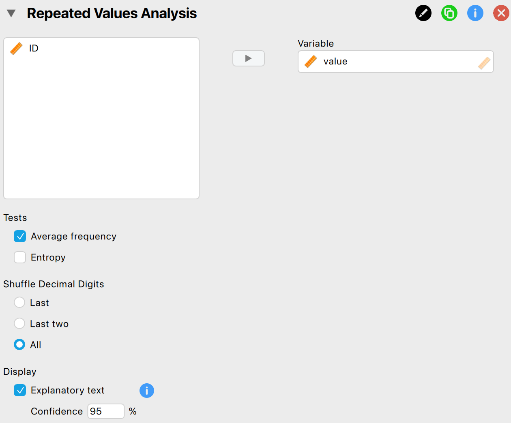
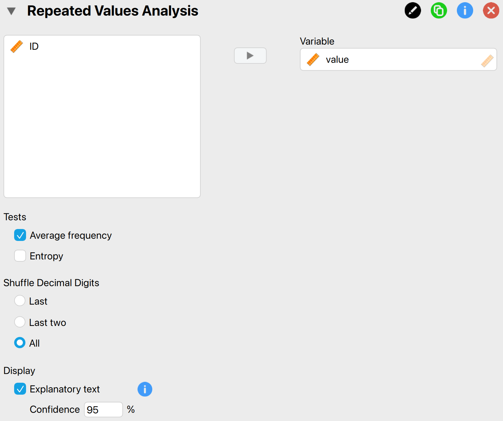
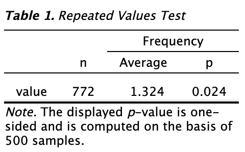
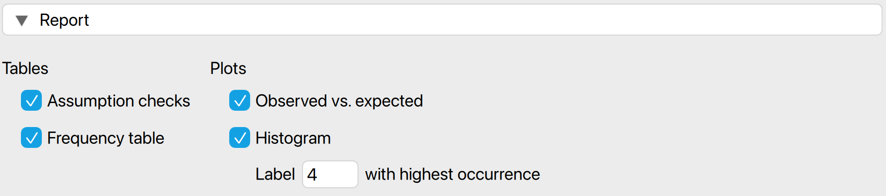
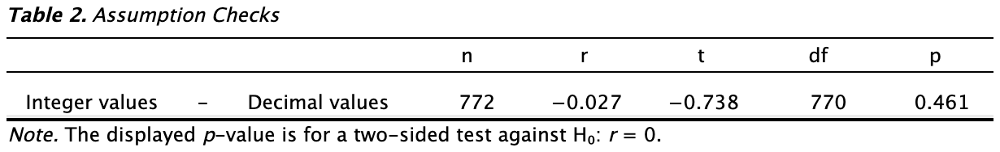
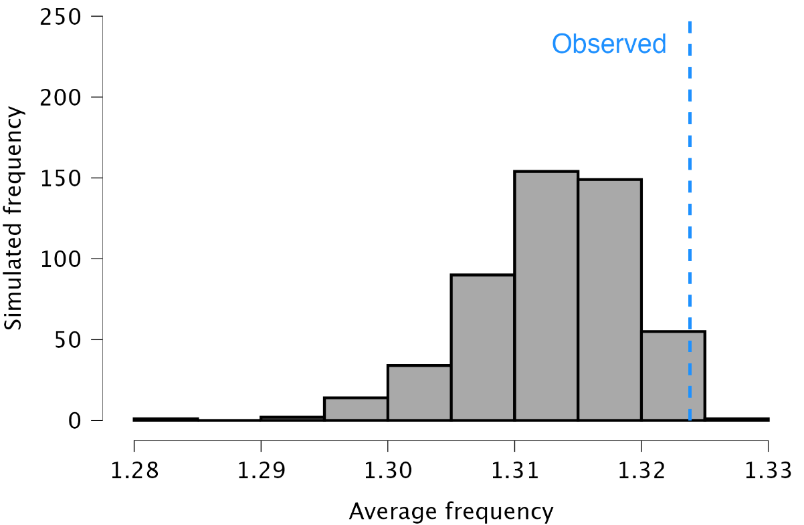
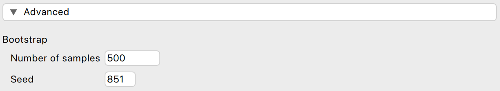
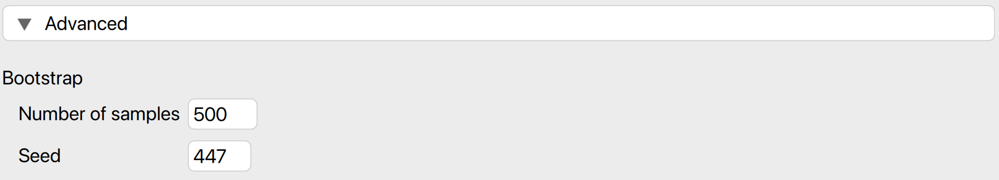

8 Repeated Values
This chapter is about the ‘Repeated Values’ analysis in the ‘Data Auditing’ section of the module.
8.1 Purpose of the analysis
The repeated values analysis examines the frequency of value repetitions within a dataset (referred to as “number-bunching”) to statistically determine if the data were likely tampered with (Simohnsohn, 2019). This can be tested statistically. The null hypothesis H\(_0\) posits that the data do not contain an unexpected amount of repeated values, while the alternative hypothesis H\(_1\) suggests they do. Unlike Benford’s law, this approach analyzes the entire number at once, not just the first or last digit.
The purpose of the analysis in JASP is to identify whether the data exhibit excessive repeated values. In auditing, this could indicate that certain items or transactions within a population may require further investigation.
8.2 Practical example
Let’s explore an example analysis of repeated values. To follow along, open the ‘Assessing Benford’s Law’ dataset from the Data Library. Navigate to the top-left menu, click ‘Open’, then ‘Data Library’, select ‘7. Audit’, and finally click on the text ‘Assessing Benford’s Law’ (not the green JASP-icon button).

This will open a dataset with 772 rows and two columns: ‘ID’ and ‘value’. The ‘ID’ column represents the identification number of the items in the population. The ‘value’ column shows the recorded values of the items.

8.2.1 Main settings
In this example, we will test whether the values in the ‘value’ column show an excessive amount of repeated values. To test this, we open the ‘Repeated Values’ analysis from the Audit module. The interface of the repeated values analysis is shown below.

These are the main settings for the analysis:
- Variable: Start by entering the variable whose digits should be analyzed for repeated values in the designated box. In this example, the variable is ‘value’, so we drag this variable to the field on the right.
- Tests: Average frequency Check this box to test if the average frequency of values differs from what is expected. In this example, we only examine the average frequency, so we check this box.
- Tests: Entropy Check this box to test if the entropy of values differs from what is expected. In this example, we do not check this box as we are only looking at the average frequency.
- Shuffle decimal digits: This setting determines which decimal digits are shuffled in the analysis. In this example, we select all decimal digits to be shuffled.
- Display: Explanatory text: Finally, select whether to show explanatory text in the output.
- Display: Confidence: Set the confidence level used in the explanatory text. In this example, we use a confidence level of 95%.
8.2.2 Main output
The main table in the output below displays the sample size (n), the average frequency of 1.324, and the p-value for the test. This indicates that each unique value in the data occurs, on average, 1.324 times. The p-value is smaller than the significance level of 5%, leading us to reject the null hypothesis and conclude that there is an excessive amount of repeated values in the data.

Note that rejecting the null hypothesis does not necessarily indicate fraud. A repeated values analysis should therefore only be used to acquire insight into whether a population might need further investigation.
8.2.3 Report
The following settings enable you to expand the report with additional output, such as tables and figures.

Tables: Assumption checks: To quantify expectations, this test assumes that the integer portions of the numbers are not correlated with their decimal portions. The table below tests this assumption and confirms it holds, as indicated by the non-significant p-value of 0.461.

Tables: Frequency table: The frequency table displays the occurrence of each unique value in the data, ordered from highest to lowest frequency. For example, it shows that the value 87,670 appeared five times, representing 0.6% of the total values.

Plots: Observed vs. expected: Check this box to generate a histogram of the expected distribution of the average frequency or entropy, assuming the decimal portions of the numbers are random and not associated with their integer portions. The observed average frequency will be indicated in the figure.

Plots: Histogram: The histogram visualizes the frequency table using bars to represent the values. Similar to the frequency table, the histogram indicates that the most frequently occurring value is 87,670, which appears five times.

8.2.4 Advanced
The following advanced settings enable you to customize the statistical computations according to your preferences.

- Bootstrap: Number of samples: This setting specifies the number of bootstratp samples used to compute the expected distribution of the average frequency or the entropy. The default value for this setting is 500.
- Bootstrap: Seed: A seed in computing is a starting point for generating random numbers. By setting a seed, you ensure that the results of the analysis can be reproduced across computers, which is useful for sharing your analysis.